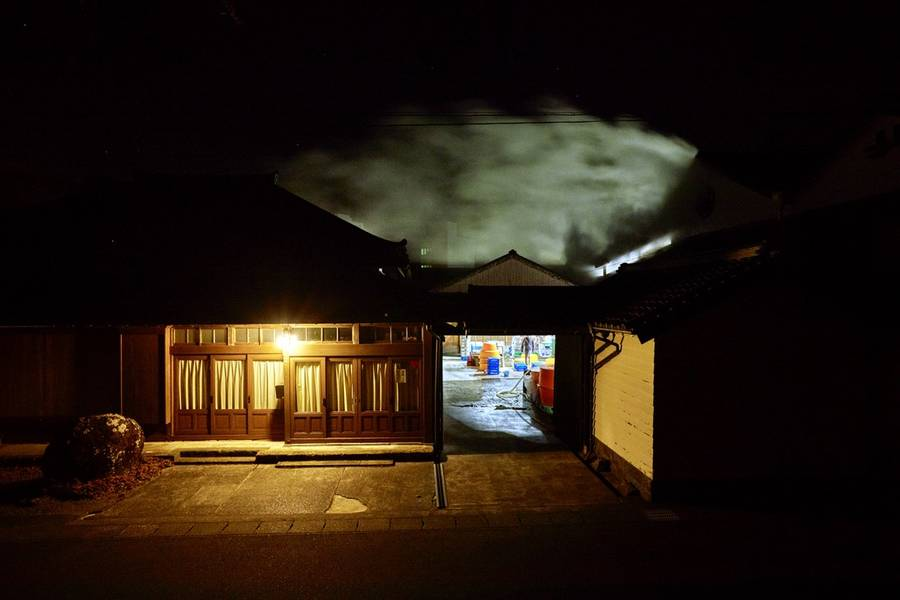
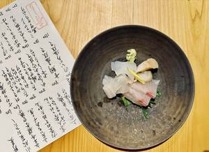
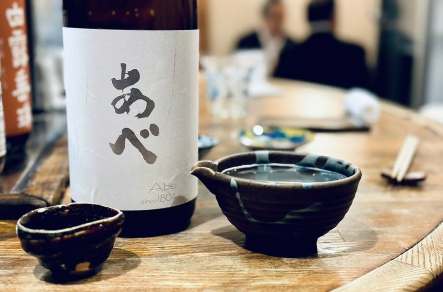

Breweries, regions, pairings, and the stories behind what you eat and drink.

Steam rises off the roof at three in the morning. Inside, the first moto of the season is beginning to find its voice.

